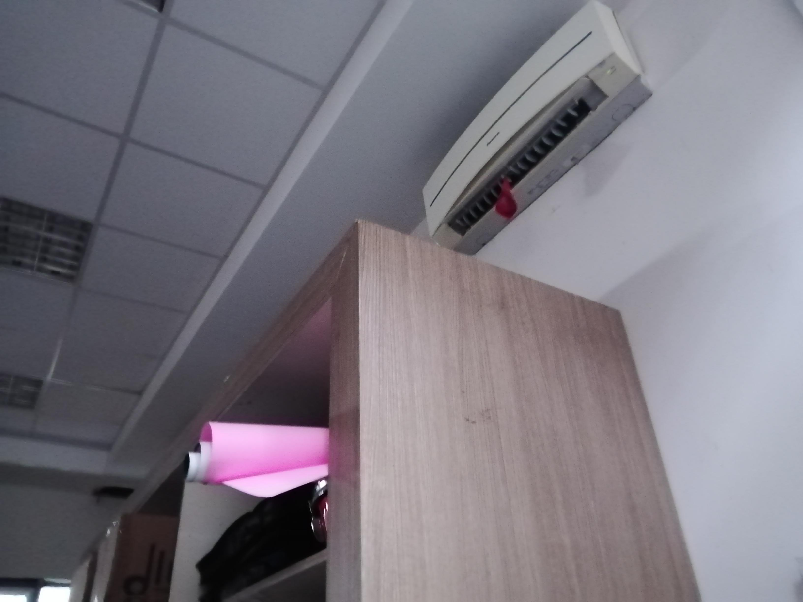
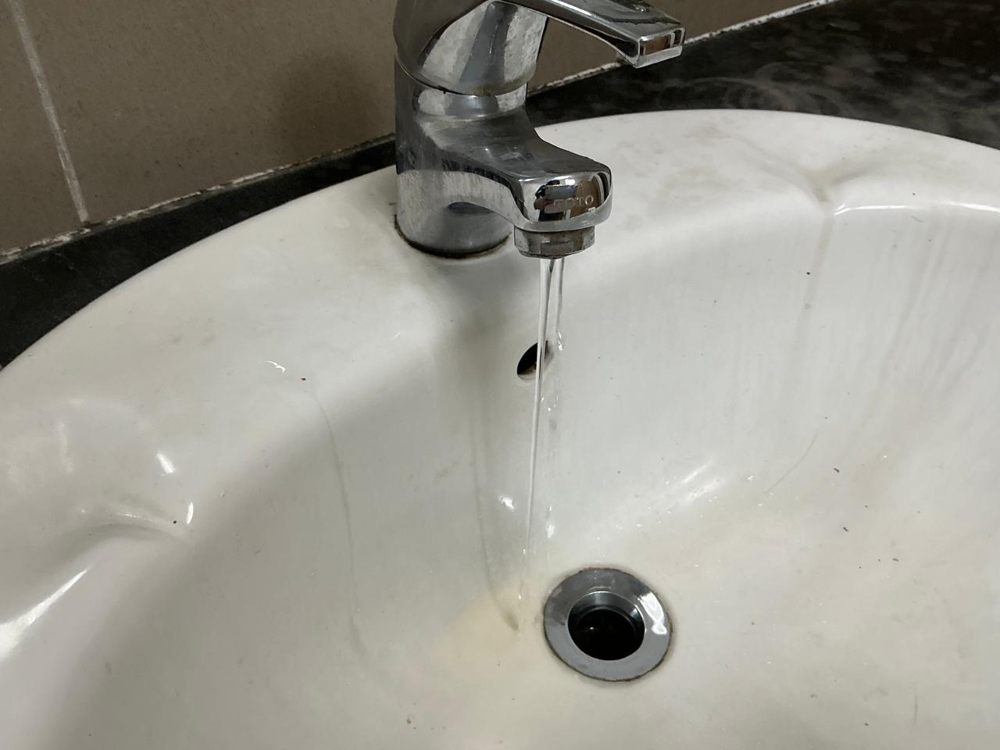
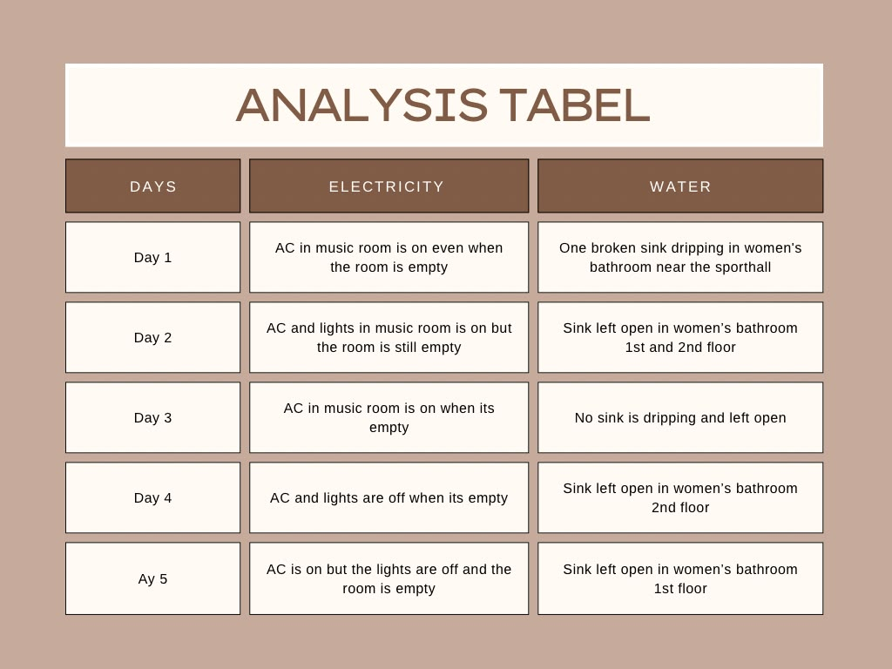

Evidence & Claim
Observations, Interview Data, and Investigation Claims
Observation & Interview Results
3-Day Observation Data
From 3 days of observation during break and after school, the AC was left on almost every day with no one inside the music room. The bathroom sink kept dripping all day and many taps were left open during break.
Interview Results with Pak Eka (School Facilities Staff)
Electricity / AC: Pak Eka stated that school electricity usage is not efficient, with bills reaching ~45 million IDR per month. All ACs are standard types (no inverter ACs). The compressors operate below peak efficiency because the distance between indoor and outdoor units is 15-20 meters (ideal is 5 meters), demanding large wattage. Additionally, the auditorium AC is 34 PK.
Water Conservation: The water bill is around 2 million IDR per month. Water can be saved during the rainy season because fields are watered naturally. In the dry season, saving water risks killing the grass, whereas using more water maintains the plants.
"Saving adds risk, wasting makes students comfortable. All have consequences whether we want to be wasteful or efficient. We must be wise."



What Can We Conclude?
Claim: Poor maintenance and careless use cause energy and water waste in our school.
Observations & Evidence: We found AC left on in an empty music room and sinks that are broken and left open, wasting electricity and water continuously.
Impact: Photos show AC running with lights off and empty rooms, alongside dripping taps making floors wet and slippery (unsafe).
Conclusion: Better awareness is required to turn off ACs and taps, alongside prompt maintenance to fix broken facilities to make the school cleaner, safer, and more sustainable.